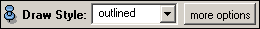

This is a special port for adjusting the drawstyle of display modules derived from ViewBase. The port provides a combo box (option menu) offering the following drawstyles:
In addition, the port allows you to set additional options via a popup menu which is activated by pressing the more options button. For a detailed description of these options please refer to the documentation of ViewBase. This port is not available for script objects.

Inherits all commands of Port.
Returns the index of the current draw style.
Sets the current draw style. The draw styles are indexed in the same order as they appear in the combo box, i.e., 0=outlined, 1=shaded, 2=lines, 3=points, 4=transparent.
Checks if 1D textures for pseudo-coloring are enabled (as opposed to Gouraud shading).
Enables or disables 1D textures for pseudo-coloring.
Returns an index describing the current normal binding mode.
Sets the normal binding. The indices have the following meaning: 0=triangle normals, 1=vertex normals, 2=direct normals (computed using a crease angle criterion, compare ViewBase).